Vorlagen
Vorlagen
So sehen die 26 Vorlagen in der App aus. Du findest sie links in der Formenleiste unter Vorlagen → Alle Vorlagen – alles lässt sich frei anpassen.
Vorlagen
Über 20 Vorlagen – ein Klick, und los.
Fertige Boards für typische Methoden – vom Wochenplaner bis zum Business Model Canvas. Alles lässt sich frei anpassen.
- Alltag: Einkaufsliste, Wochenplaner, To-do-Liste
- Unterricht: Quiz, Mindmap, Zahlenstrahl
- Beruf: Kanban, SWOT, Gantt, BPMN, Retro
Vorlagenüber 20
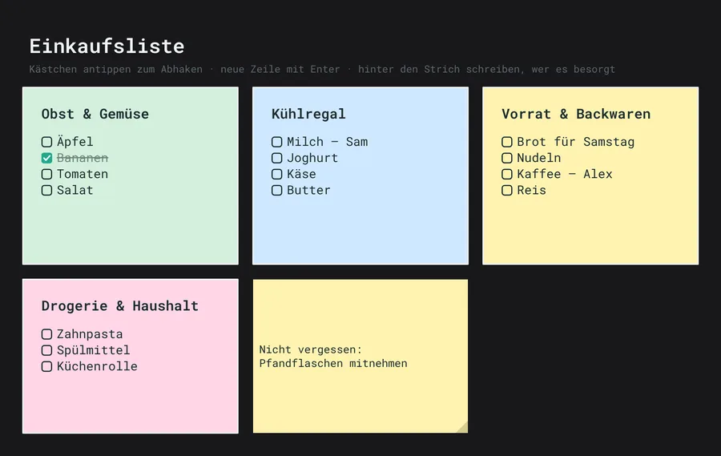
AlltagEinkaufslisteZum Abhaken, nach Bereichen sortiert – mit Namen, wer was mitbringt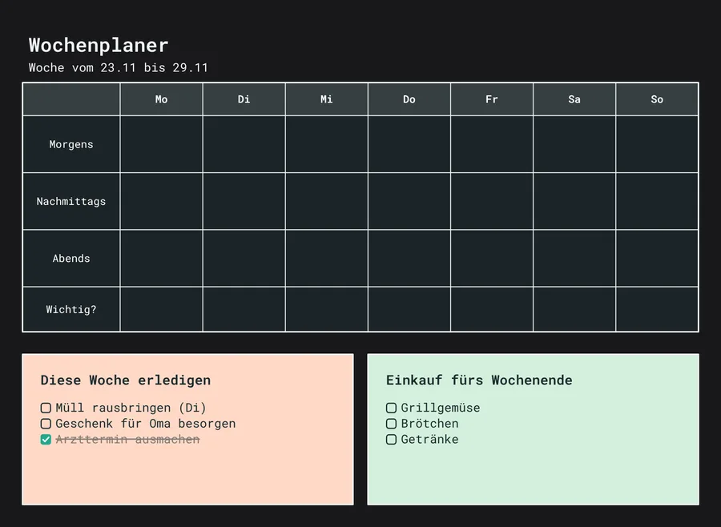
AlltagWochenplanerMontag bis Sonntag für die ganze Familie, mit Aufgaben der Woche AlltagTo-do-ListeHeute, diese Woche, irgendwann – zum Abhaken
AlltagTo-do-ListeHeute, diese Woche, irgendwann – zum Abhaken UnterrichtZeitstrahlMeilensteine eines Projekts in zeitlicher Reihenfolge
UnterrichtZeitstrahlMeilensteine eines Projekts in zeitlicher Reihenfolge UnterrichtIshikawa-DiagrammUrsachen eines Problems nach den 6 M ordnen
UnterrichtIshikawa-DiagrammUrsachen eines Problems nach den 6 M ordnen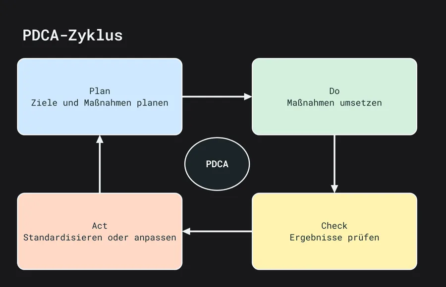
UnterrichtPDCA-ZyklusPlan, Do, Check, Act: kontinuierlich verbessern Unterricht5-Why-AnalyseMit fünfmal „Warum?“ zur Grundursache
Unterricht5-Why-AnalyseMit fünfmal „Warum?“ zur Grundursache UnterrichtZeitstrahl senkrechtEreignisse von oben nach unten, abwechselnd links und rechts
UnterrichtZeitstrahl senkrechtEreignisse von oben nach unten, abwechselnd links und rechts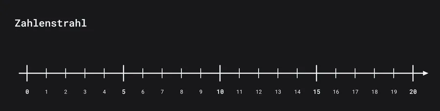
UnterrichtZahlenstrahl 0–20Zahlenstrahl in Einerschritten für Rechenwege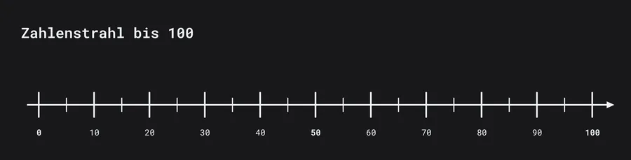
UnterrichtZahlenstrahl 0–100Zehner beschriftet, Fünferschritte als Striche UnterrichtMindmapThema mit Zweigen, per „+ Zweig“ erweiterbar
UnterrichtMindmapThema mit Zweigen, per „+ Zweig“ erweiterbar UnterrichtQuizFrage mit Antworten – live per Handy oder mit „Lösung“ in der Präsentation
UnterrichtQuizFrage mit Antworten – live per Handy oder mit „Lösung“ in der Präsentation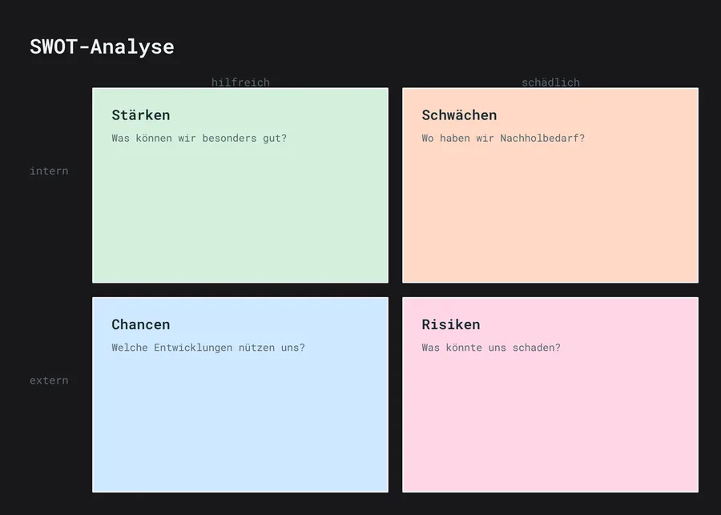
BerufSWOT-AnalyseStärken, Schwächen, Chancen und Risiken auf einen Blick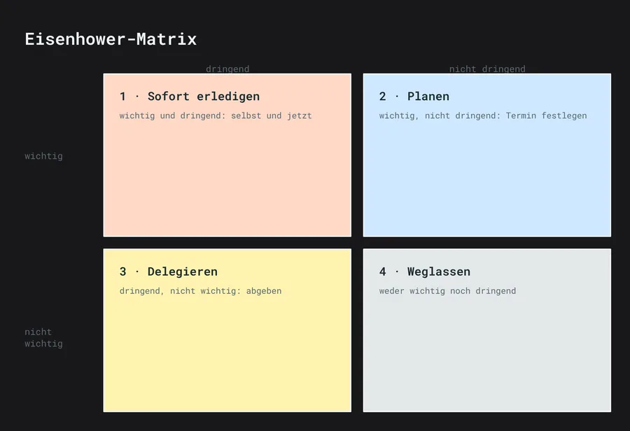
BerufEisenhower-MatrixAufgaben nach Wichtigkeit und Dringlichkeit sortieren BerufRetrospektiveStart, Stop, Weitermachen und Maßnahmen fürs Team
BerufRetrospektiveStart, Stop, Weitermachen und Maßnahmen fürs Team BerufProzesslandkarteFührungs-, Kern- und Unterstützungsprozesse
BerufProzesslandkarteFührungs-, Kern- und Unterstützungsprozesse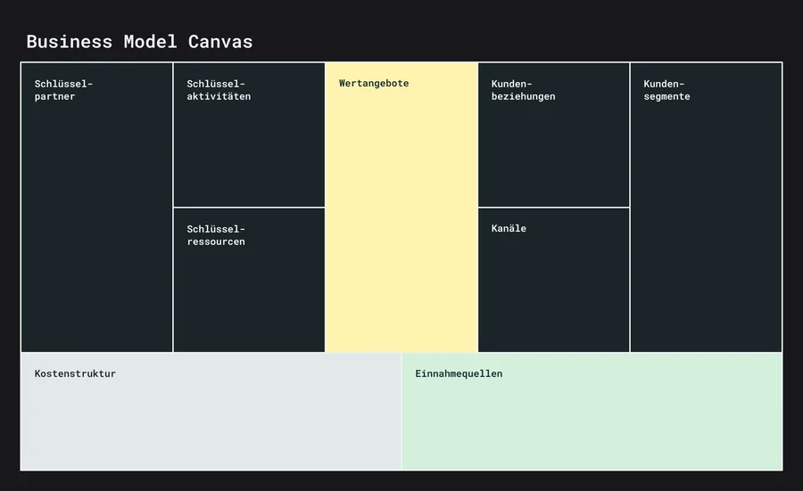
BerufBusiness Model CanvasGeschäftsmodell auf neun Feldern BerufOrganigrammAufbau einer Organisation mit Leitung und Teams
BerufOrganigrammAufbau einer Organisation mit Leitung und Teams BerufStakeholder-MatrixBeteiligte nach Einfluss und Interesse einordnen
BerufStakeholder-MatrixBeteiligte nach Einfluss und Interesse einordnen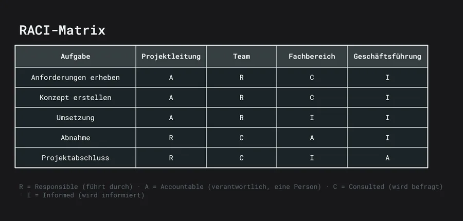
BerufRACI-MatrixWer ist verantwortlich, wer macht mit, wer wird informiert?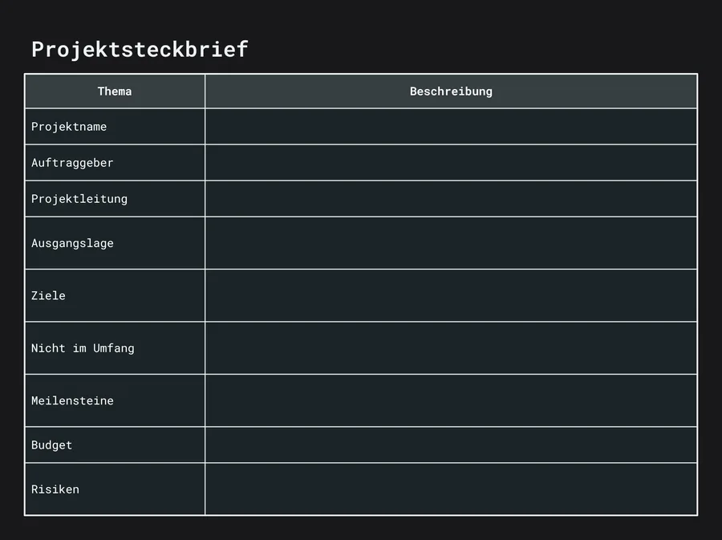
BerufProjektsteckbriefDie wichtigsten Eckdaten eines Projekts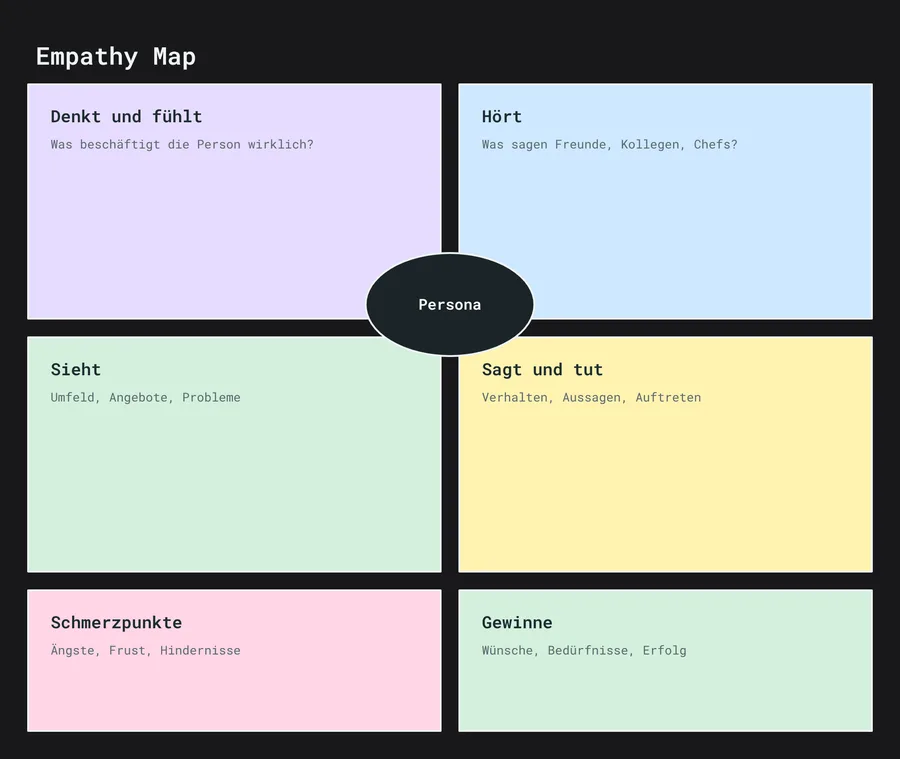
BerufEmpathy MapSich in Kundinnen und Kunden hineinversetzen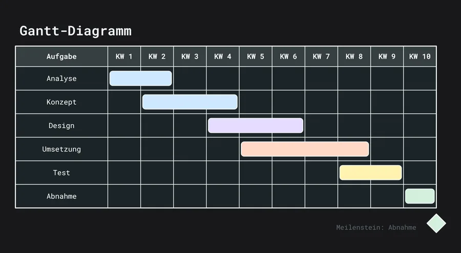
BerufGantt-DiagrammAufgaben als Balken über zehn Wochen, mit Meilenstein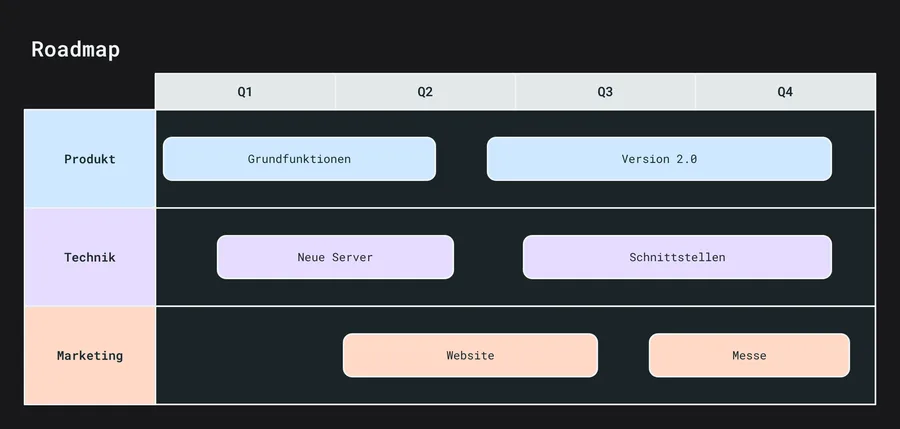
BerufRoadmapVorhaben je Bereich über vier Quartale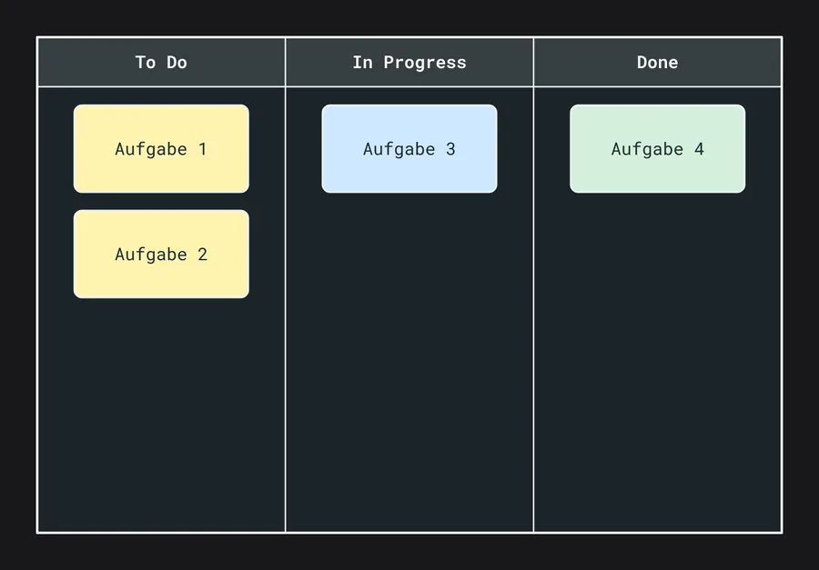
BerufKanban-BoardTo Do, In Arbeit, Erledigt BerufScrum-BoardBacklog, Sprint, Review
BerufScrum-BoardBacklog, Sprint, Review